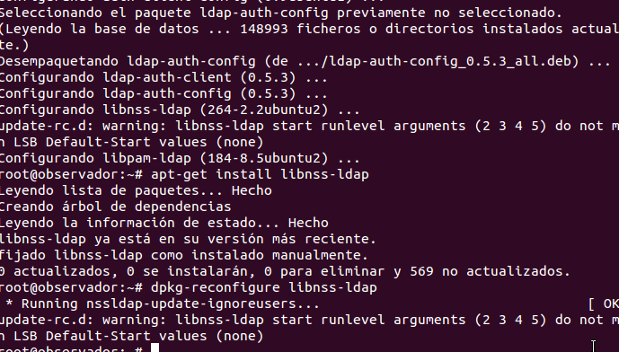
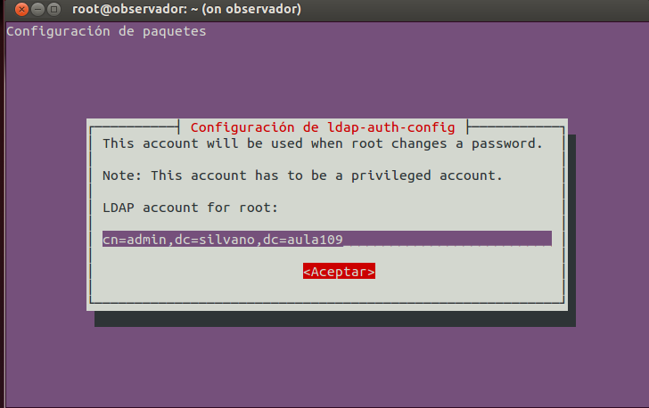

- Módulo: Administración de Sistemas Operativos
- Título del trabajo Cliente Ldap
- Componentes del grupo: Silvano Pérez Yanes
- Curso Académico: 2014/2015
- Fecha de entrega: 6 de Noviembre de 2014
Para esta práctica vamos a instalar unos paquetes ldap para la máquina cliente ldap. Nuestro objetivo es poder acceder a los usuarios del phpldapadmin del servidor donde han sido creados. Una vez instalados los paquetes de ldap, nos saltara una ventana de configuración ldap, en la cual debemos instroducir el nombre de administrador ldap y el DN de ldap, además de la ip del servidor ldap; continuar con algunas opciones y finalizamos.
 Una vez instalado y configurado los paquetes de instalación ldap cliente, nos pasamos a configurar los ficheros de configuración de todos los archivos ldap del cliente para el correcto funcionamieto del cliente
En este fichero de configuración, tenemos que modificar las líneas donde van introducida las unidades organizativas creadas en el servidor ldap, en nuestro caso: usuarios y grupos.


Para finalizar, tenemos que instalar el paquete de instalación finger para poder encontrar a los usuarios del servidor ldap.